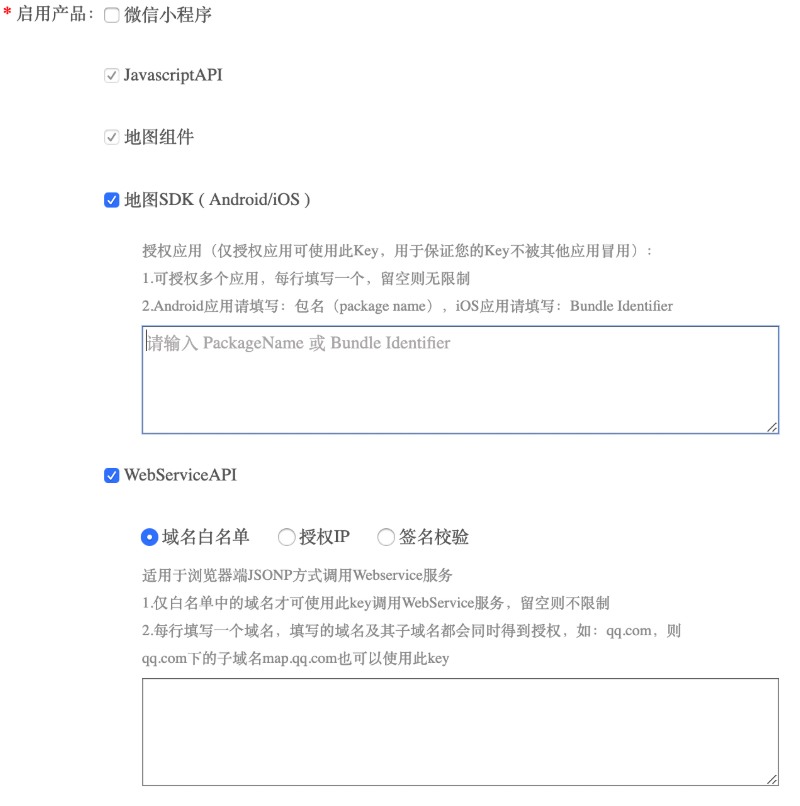

POI检索
POI（Point of Interest，兴趣点）是地图中的一个重要元素，它可代表一个商铺、一个建筑物或者一个公交站等。腾讯地图iOS SDK提供给了多种POI搜索功能：POI指定地区搜索、POI周边搜索、POI矩形搜索。
使用须知
使用限制
针对个人开发者和企业开发者，提供的服务调用量有差别，可参考配额限制说明。
启用服务与安全设置 腾讯位置服务API Key，在调用时用于唯一标识开来者身份，API KEY是各产品通用的，也就是说同一个Key可以用在地图SDK，也可以用在JavascriptAPI，也可以用在WebServiceAPI以及其它各产品中，可针对不同产品可独立启用（开关）。若在腾讯地图SDK中使用检索功能，需勾选WebServiceAPI选项。 假设您的某个Key只会调用地图SDK，可在Key配置界面，将其它产品关闭，以降低安全风险。

关于API Key安全：腾讯位置服务的调用配额是开放到Key上的，为了防止您的Key被盗用，保障调用安全，我们在Key的设置中提供了多种安全策略：详细使用方法请点击了解>>